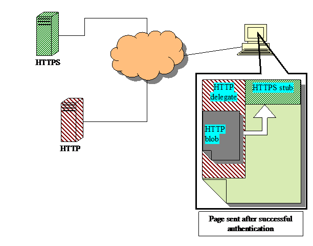
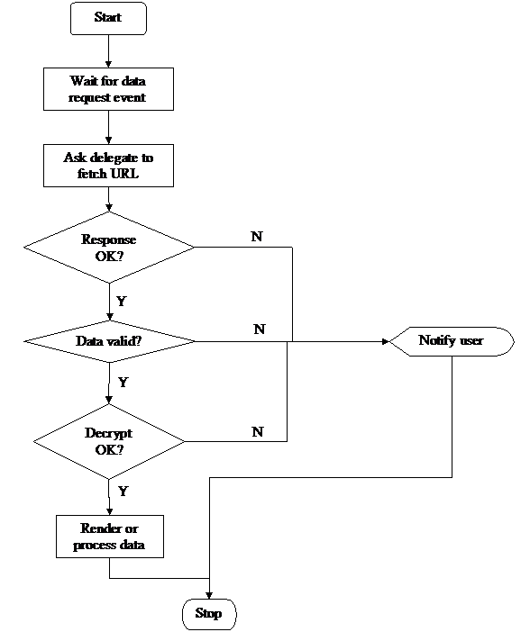
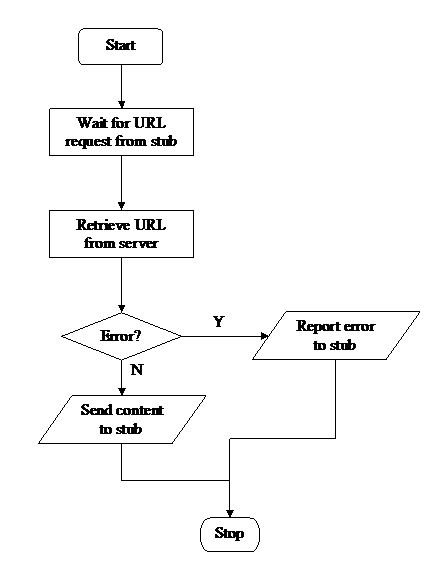
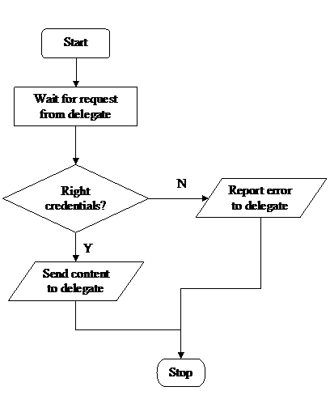

How can you transmit Tweets or web chat messages securely without using HTTPS for every message? Is it possible to do it 100% securely? Can we solve the MITM issues that has plagued current encryption solutions like aSSL and JavaScrypt? Can we get good performance and over clock SSL as this blog discusses?
We propose a secure alternative to HTTPS based on standard browser security available today. Our proposal has lower server side resource consumption, enables caching of encrypted content, and provides a low latency client-server communication.
If you have feedback, contact Ashwin Kashyap, email: ashwink -> cs.rutgers.edu. I am looking for opportunities in areas of search & discovery, recommendation systems, data mining, video recommendation.
HTTPS is a secure version of HTTP that offers server authentication and communication encryption and authentication. Its limitations lies in the required processing power that can be quite steep, as well as in a high latency to setup a connection due to authentication and key establishment HTTPS also does not offer caching of encrypted content as the entire HTTPS communication is encrypted differently for each session. Even if alternate protocols can solve these problems, none of them is backward compatible nor works with existing widely deployed web technologies.
We propose a method that combines HTTP, HTTPS and Javascript that provides secure, low latency communication, is backwards compatible and works in any Javascript enabled browser. This method is as secure as HTTPS, while the server side resource requirements are the same as for regular HTTP.

Figure 1: System architecture
The idea behind this invention is to encrypt sensitive web documents such as emails, spreadsheets or chat messages using a symmetric key. These encrypted blobs might be stored or just transit through the server (e.g. chat). The server relays the blobs to a suitably authenticated client via HTTP which is then decrypted by the HTTPS-stub and suitably rendered for human interaction.
The first step in the process is for the user to authenticate. Once successful, a HTTP-delegate and HTTPS-stub are transmitted back, either standalone or embedded in another page. When the user wishes to access a sensitive document, the corresponding HTTP-blob is requested by the HTTP-delegate via HTTP. This cannot be retrieved directly by the HTTPS-stub due to cross domain restrictions imposed on scripts. The retrieved blob is then transferred to the HTTPS-stub, which proceeds to authenticate the blob and processes it. See Figure 1 for an illustration of this. Due to performance requirements, the blobs must be transmitted via HTTP, but for security, the processing must be performed by the HTTPS-stub. Note that the HTTP-delegate cannot access the contents of the HTTPS-stub due to cross domain security restrictions imposed by browsers. However, it is possible to send messages that can be validated and further processed by the stub. This ensures that a hacked HTTP-delegate cannot steal information from the secure HTTPS-stub. It also ensures that tampered messages can be reliably detected and discarded. See figures 2a, 2b and 2c for flowcharts depicting these processes.
One implementation of our idea is to construct the HTTP-delegate and HTTPS-stub as iframes. All communication and decryption routines are implemented as Javascripts that run in the context of the iframe. These two iframes communicate by sending messages as described in the next section. In our prototype, we have successfully performed the transfer using the RC4 algorithm.
A patent application has been filed embodying these ideas.

Figure 2a: Process at HTTPS-stub

Figure 2b: Process at HTTP-delegate

Figure 2c: Process at HTTP blob server
Our scheme assumes that the HTTPS-stub can retrieve encrypted messages via HTTP and decrypt them. This cannot be done directly due to security restrictions placed on Javascript that prevent cross domain information exchange. We need these security restrictions - otherwise the HTTP components can simply access secrect keys! But this also means that none of the DOM APIs can be used to access components from another domain to transfer messages. This is applicable even if the HTTP and HTTPS server are one and the same, with the same FQDN, as it still constitutes cross domain due to the protocol and ports being different. There are several ways to overcome this problem without using Flash or Java or a custom plug-in.
In our prototype, we have implemented the window.postMessage() method. It is nevertheless possible to implement a combination of these methods to make sure that it works on older browsers as well as to take advantage of newer features if present. So, the actual method to use can be determined (for e.g. after the user has been authenticated) by probing for the browser’s feature set or by detecting the version.
We assume that standard secure encryption routines are available at server side and that the decrypt routines on the client side can be implemented in Javascript securely. This also applies while validating data – there are many signature verification schemes available that are secure with an available Javascript implementation. There are also various schemes that can be used (such as key refresh) while implementing decryption routines to enhance security and performance. We assume that these shall be implemented securely and suitably by someone a skilled in the field and hence we shall not address these issues as they are orthogonal to our invention. Below, we address a few issues that might arise that did not exist with standard HTTPS.
One class of attacks is to publish a malicious page which embeds the HTTP-delegate. When a gullible user is tricked into visiting the page, it is possible for the malicious page to request sensitive information from the HTTP-delegate by sending it messages. Hence, it is important that the HTTP-delegate only retrieve encrypted blobs. This can be easily achieved by publishing the HTTP-delegate on a separate domain that only serves blobs to authenticated users – for e.g. blobs.somedomain.com for sending blobs and HTTP-delegate and secure.somedomain.com for sending the stub.
When the blob has links to other blobs, these links must be retrieved and processed. One way to handle this is to load all referenced links in the blob by a Javascript function instead of a direct request. This function, which is implemented in the HTTPS-stub, first sends a message containing the URL of the blob to the HTTP-delegate, requesting it to download it. Once the blob has been retrieved, the rest of the process is the same as what has been previously described. In our prototype, we have implemented a proxy object that mimics the well known XMLHttpRequest object, but works in a cross domain fashion. Callbacks can be specified to process decrypted data.
Most browsers use the following policy to cache HTTPS documents: they do not store them on disk but only cache it in memory, which is cleared when the user navigates away from the website. This behavior provides the right balance between security and performance as it would be unacceptable to reload the stub whenever a new blob is loaded.
Since the blobs are being served by HTTP, they might be cached on disk or even at intermediates such as proxies. This will not pose a security risk as the blobs are strongly encrypted using a key with high entropy and not simply the user’s password. These keys can also be periodically refreshed to enhance security.
This scheme cannot be generally used as a HTTPS replacement. For some situations, it might be better and faster to simply encrypt everything with HTTPS. However, when there is a large collection of documents that are small in size and the client accesses them sporadically or to make sporadic remote procedure calls (RPCs), our proposed method will be way more efficient. This is the typical scenario for web email, web spreadsheets, web chat etc. In this situation, it is impractical to maintain a client-server keep-alive HTTPS connection – as the overhead of doing this for millions of users is extremely high. Without using keep-alive, a new HTTPS connection must be established for fetching small amounts of data. In such a situation, the overhead of establishing the HTTPS connection easily outweighs the transmission time for the small message. This is because, in order to establish a HTTPS connection, several parameters must be negotiated between the client and the server and this causes multiple round-trip information exchanges. Technologies such as hardware decryption and SSL connection reuse are not useful here as the problem is not CPU bound but is due to the excessive round trip message exchanges. In our system, both the HTTP-delegate and HTTPS-stub are cached in the browser and the HTTP-blobs are fetched via HTTP. It is also much lighter from a resource consumption perspective to maintain HTTP keep-alive connections as HTTP is stateless.
Figure 3 shows a benchmark to perform RPCs (using JSON-RPC) between a client and a server. The server is a fast 4-way P4 machine with several gigabytes of RAM. The network is a 1GBps Ethernet network with average latencies of less than 0.5ms. We used an Apache web server and ApacheBench to perform the benchmark. The concurrency on the x-axis represents the number of ApacheBench instances that were run simultaneously. ApacheBench was also patched to handle SSL reuse correctly. The SSLCipherSuite in Apache configuration was RC4-MD5 which is the fastest available. The server certificate used was RSA 1024 bit.
Brief note on terminology – “https_reuse” and “https_noreuse” refer to a SSL feature that enables caching of the negotiated master key. “ka” and “noka” is respectively, whether keep-alive is used or not. Lastly, “http” and “https” refer to the underlying protocol used for transport.
Note that typical latency on the internet is of the order of 20-30 ms, and the HTTPS numbers will be far worse in this scenario. It is clear that without keep-alive, it is extremely inefficient to use HTTPS. While https_ka is roughly 60% slower than http_ka, https_*_noka is almost 3000% slower than http_noka. This level of degradation is unacceptable for secure, scalable and interactive AJAX web sites.
Fetching many small documents such as while reading web-email is very similar to performing RPCs as the data exchanged is small and the request pattern might be sporadic and unpredictable.
Web based chat systems pose a similar problem where the payload is small and the communication is sporadic. With our method, it is possible to deploy a secure, highly scalable web based chat system.
Figure 3: Performance of HTTP and HTTPS RPC
Below is a discussion of how others have implemented similar things in the past, including the manner in which others have attempted to solve the problem.
Web security is often solved by using HTTPS, for efficiency and scalability, these solutions are often implemented in a hardware device. The encryption functions are delegated to a hardware component which exclusively encrypts content. This hardware acts as a reverse-proxy between the user and the HTTP server. The web server generates unencrypted content, transmits it to the hardware device that encrypts the content and transmits it to the user.
This enhancement does not solve the latency problem since HTTPS’ secure channel establishment inherently requires more round trips than HTTP. Even if the available bandwidth increases, the round trip essentially remains the same due to hard physical constraints such as the speed of light and limits in the switching fabric. Also, this does not solve the problem of keep-alive HTTPS connections as it is a stateful protocol and consumes a significant amount of memory. On the other hand, HTTP is a stateless protocol and is much lighter to have keep-alive connections for millions of users.
For these reasons, several websites simply do not use HTTPS unless it is absolutely necessary.
aSSL is a web-application-level encryption and authentication system. It works by using a combination of Javascript and a server-side script. It provides encryption similar to HTTPS, by creating a secure layer from the browser to the server over HTTP. It prevents the content to be sniffed, but does not prevent a man-in-the-middle attack since there is currently no trust system for the public keys that are used, and also it is possible to modify the decrypt routines itself since it is transmitted over HTTP. The latter problem of delivering the decrypt routines over HTTPS is inherently secure and it cannot be solved. There are several solutions similar to this that assume that MITM does not occur and only partially solve the problem.
Many web applications batch data so that individual objects do not need to be retrieved when the user requests them. One good example of this is Gmail that fetches emails in batches of 20 and displays them only when the user requests them. This reduces frequent communication with the server and hence reduces latency even when HTTPS is used. The main limitation of this approach is that it cannot be applied to highly interactive applications such as web chat, Twitter or RPC request.
The idea of application driven encryption is to install an application on the user’s machine that decrypts the content received by the browser.
The password must be known to the user which has to be entered manually.
Since the file is generated once and may be downloaded by the user, the password cannot be changed easily. Further more, due to the user interaction, the password cannot not be more than 10 or 15 characters. A typical example is to send an encrypted ZIP or PDF with pre-shared password. This is unsuitable for RPC applications.
Due to liberal security policies, it is possible to transmit a Flash object with the decode routines and key via HTTPS and embed it so that it can access data via HTTP. The secure Flash object can then decode data and display it suitably. The drawback of this approach is that the Flash plugin needs to be installed.
I have implemented a proof of concept, prototype. The server side encryption functions are statically performed using the openssl tool. Then the page components are deliveered using HTTP and HTTPS as described above. The HTTP iframe then fetches the encrypted content, transfers it to the HTTPS component which then renders the content.
Currently I do not plan to release it widely, it is also in need of a lot of refactoring work!
If you would like to see a demo, please email me! I am working on putting it up shortly.